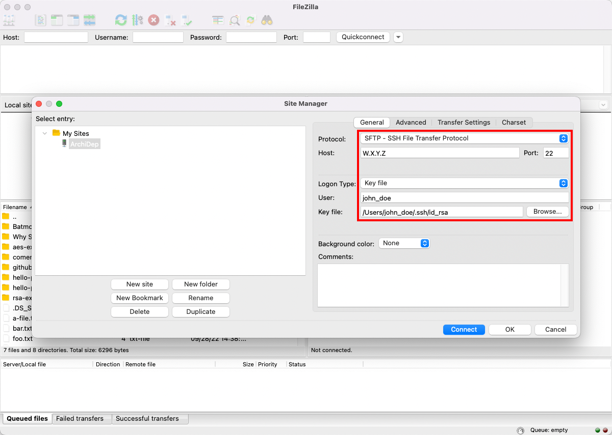
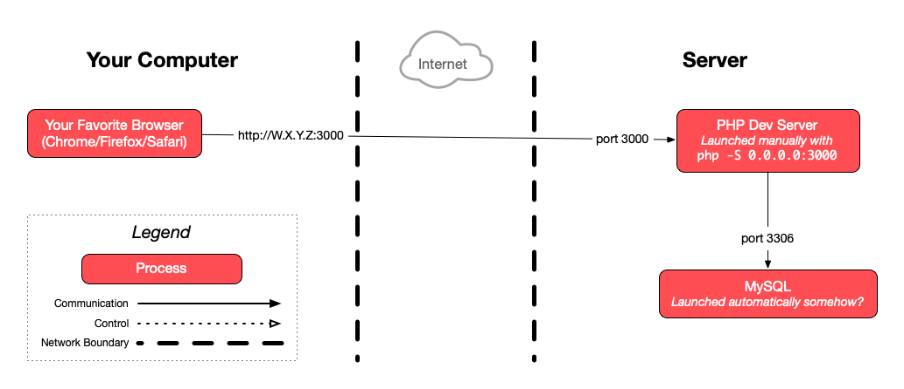
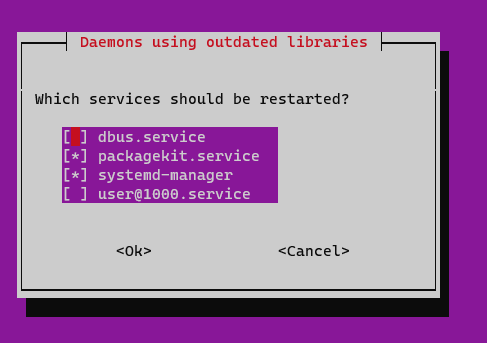

Connect to your cloud server with SSH for this exercise.
Deploy a PHP application with SFTP
This guide describes how to deploy a PHP application over SFTP on a server with PHP and MySQL installed, using the PHP development server.
On this page
Table of contents
 Legend
Legend
Parts of this exercise are annotated with the following icons:
-
 A task you MUST perform to complete the exercise
A task you MUST perform to complete the exercise
-
 Optional step that you may perform to make sure that
everything is working correctly, or to set up additional tools that are not required but can
help you
Optional step that you may perform to make sure that
everything is working correctly, or to set up additional tools that are not required but can
help you
-
 Advanced tips on how to go further (or
challenges!)
Advanced tips on how to go further (or
challenges!)
 The end of the exercise
The end of the exercise-
 The architecture of the software you ran or
deployed during this exercise
The architecture of the software you ran or
deployed during this exercise
-
 Troubleshooting tips: how to fix common problems you might
encounter
Troubleshooting tips: how to fix common problems you might
encounter
Setup
Use the previous PHP Todolist Exercice. Clone the PHP Todolist Exercice on your local machine if you do not have it. Be sure to use a version with the three SQL queries implemented, i.e. the fork you worked on as a group.
Install MySQL
Update your package lists and install the MySQL database server:
$> sudo apt update
$> sudo apt install mysql-server
APT may prompt you to restart some services. See the troubleshooting section
about  Daemons using outdated
libraries if necessary.
Daemons using outdated
libraries if necessary.
Advanced Packaging Tool (APT) is the package manager for Ubuntu (and some other Linux distributions). We will not discuss this tool, but you can read more about it in the installation & upgrading section of the system administration cheatsheet.
APT should automatically start MySQL after installation. You can check this with the following command:
$> sudo systemctl status mysql
Secure your installation by running the mysql_secure_installation tool that
comes with MySQL. It will ask you several questions to help you improve the
security of your MySQL installation.
We suggest that you configure low password strength validation in MySQL when asked. A password that is hard to remember is not a good password.
$> sudo mysql_secure_installation
Securing the MySQL server deployment.
Connecting to MySQL using a blank password.
VALIDATE PASSWORD COMPONENT can be used to test passwords
and improve security. It checks the strength of password
and allows the users to set only those passwords which are
secure enough. Would you like to setup VALIDATE PASSWORD component?
Press y|Y for Yes, any other key for No: y
There are three levels of password validation policy:
LOW Length >= 8
MEDIUM Length >= 8, numeric, mixed case, and special characters
STRONG Length >= 8, numeric, mixed case, special characters and dictionary file
Please enter 0 = LOW, 1 = MEDIUM and 2 = STRONG: 0
Skipping password set for root as authentication with auth_socket is used by default.
If you would like to use password authentication instead, this can be done with the "ALTER_USER" command.
See https://dev.mysql.com/doc/refman/8.0/en/alter-user.html#alter-user-password-management for more information.
By default, a MySQL installation has an anonymous user,
allowing anyone to log into MySQL without having to have
a user account created for them. This is intended only for
testing, and to make the installation go a bit smoother.
You should remove them before moving into a production
environment.
Remove anonymous users? (Press y|Y for Yes, any other key for No) : y
Success.
Normally, root should only be allowed to connect from
'localhost'. This ensures that someone cannot guess at
the root password from the network.
Disallow root login remotely? (Press y|Y for Yes, any other key for No) : y
Success.
By default, MySQL comes with a database named 'test' that
anyone can access. This is also intended only for testing,
and should be removed before moving into a production
environment.
Remove test database and access to it? (Press y|Y for Yes, any other key for No) : y
- Dropping test database...
Success.
- Removing privileges on test database...
Success.
Reloading the privilege tables will ensure that all changes
made so far will take effect immediately.
Reload privilege tables now? (Press y|Y for Yes, any other key for No) : y
Success.
All done!
Install PHP
Here you will install the bare minimum:
Simply run this command to install both:
$> sudo apt install php-fpm php-mysql
Traditionally, PHP is deployed using the Apache web server, which is a generic web server and reverse proxy but is also capable of executing PHP code. To simplify things in this exercise, we will not install Apache, but instead execute the PHP application directly from the command line using the simpler PHP development server.
Use a real password
The todolist.sql file creates a todolist user with the password
change-me-now by default. You should change the password to a more secure
value. Make sure that the password you choose is strong enough per the minimum
password requirements you chose when you secured the MySQL installation.
Need help choosing a good password? Don’t use something that is hard to remember. You’re better off using a passphrase (here’s a French version).
It is good practice to create a different user and password for each application that connects to the MySQL database server. That way, if one of the applications is compromised, it cannot access or modify the databases of the other applications (provided you configured appropriate access privileges).
Notably, you should never use the MySQL root password to connect an
application to its database. You, the system administrator, should be the only
person who knows that password.
Upload the application
On your local machine, use an SFTP client like FileZilla or Cyberduck to upload the application to the server.
Connect the SFTP client to your server using SSH public key authentication. In FileZilla, open the Site Manager and configure your connection like this:

You must select your private key (id_ed25519 and not id_ed25519.pub) in
FileZilla. The server you are connecting to has your public key. Just like when
you use SSH on the command line, FileZilla will use your private key to prove to
the server that you are the owner of your public key.
On Windows, you can toggle the display of hidden files in the View tab of the
explorer to access your .ssh directory manually. On macOS, type open ~/.ssh
in your Terminal or use the Cmd-Shift-. shortcut to display hidden files. On
most Linux distributions, the file manager will have an option to show hidden
files under its menu.
On Windows, FileZilla may ask you to convert your private key to another format. You can do so.
Once you are connected to your server with your SFTP client, copy the
application to /home/jde/todolist (replacing jde with your Unix username).
In FileZilla, you can simply drag-and-drop the directory from your machine on the left to the server on the right. You can then rename it if necessary.
Initialize the database
Connect to your server and go into the uploaded directory:
$> hostname
jde.archidep.ch
$> cd ~/todolist
Execute the project’s SQL file to create the database and table (it will ask you
for the MySQL root user’s password you defined earlier):
$> sudo mysql < todolist.sql
This uses the Unix redirection operator < to send the
contents of the todolist.sql file into the standard input
stream of the sudo mysql command. When provided with SQL
queries on its input stream, the mysql command will connect to the MySQL
server and execute them, then stop.
Optional: make sure it worked
To make sure everything worked, you can check that the table was created in the MySQL database server. You do not have a phpMyAdmin web interface to administer the database server, since you are installing everything on your server yourself, and you did not install that.
Use the following command and SQL queries to first connect to the MySQL database
server as the administrator (the MySQL root user), then display the todo
table’s schema:
$> sudo mysql
> connect todolist;
> show create table todo;
+-------+----------------------------------------------------+
| Table | Create Table |
+-------+----------------------------------------------------+
| todo | CREATE TABLE `todo` (
`id` bigint(20) NOT NULL AUTO_INCREMENT,
`title` varchar(2048) NOT NULL,
`done` tinyint(1) NOT NULL DEFAULT '0',
`created_at` timestamp NOT NULL DEFAULT CURRENT_TIMESTAMP,
PRIMARY KEY (`id`)
) ENGINE=InnoDB AUTO_INCREMENT=3 DEFAULT CHARSET=latin1 |
+-------+----------------------------------------------------+
1 row in set (0.00 sec)
Everything went well if the table was created, since the creation of that table is the last step of the todolist.sql script.
You may exit the interactive MySQL console like most shells by typing exit.
Update the configuration
Update the first few lines of the index.php file with the correct configuration:
define('BASE_URL', '/');
define('DB_USER', 'todolist');
define('DB_PASS', 'your-secret-password');
define('DB_NAME', 'todolist');
define('DB_HOST', '127.0.0.1');
define('DB_PORT', '3306');
The index.php file on the server must be modified. There are several ways
you can do this:
- Edit the file locally, then copy it to the server again using your SFTP client like FileZilla.
- Edit the file directly on the server with
nanoorvim. - Some SFTP clients allow you to open a remote file in your local editor. In FileZilla, right-click a file, select View/Edit, then choose your favorite editor. Make your changes and save the file. FileZilla should automatically prompt you to upload the changes.
Run the PHP development server
Also in the uploaded directory on the server, run a PHP development server on port 3000:
$> php -S 0.0.0.0:3000
You must really use 0.0.0.0 for the php -S command, and not your server’s
IP address. 0.0.0.0 is not an actual IP address; it is a special notation
that tells the PHP development server to accept connections from any IP address.
The -S <addr:port> option of the php command starts the built-in web
server on the given local address and port.
You (and everbody else) should be able to access the application in a browser at
your server’s IP address and the correct port (e.g. http://W.X.Y.Z:3000).
What have I done?
You have deployed a PHP application to a server running in the Microsoft Azure cloud.
The application is now publicly accessible by anyone on the Internet, at your instance’s public IP address.
Architecture
This is a simplified architecture of the main running processes and communication flow at the end of this exercise.

{kind=link}
Troubleshooting
Here’s a few tips about some problems you may encounter during this exercise.
Daemons using outdated libraries
When you install a package with APT (e.g. MySQL), it may prompt you to reboot and/or to restart outdated daemons (i.e. background services):

Simply select “Ok” by pressing the Tab key, then press Enter to confirm.
This happens because most recent Linux versions have unattended upgrades: a tool that automatically installs daily security upgrades on your server without human intervention. Sometimes, some of the background services running on your server may need to be restarted for these upgrades to be applied.
Since you are installing a new background service (the MySQL server) which must be started, APT asks whether you want to apply upgrades to other background services by restarting them. Rebooting your server would also have the effect of restarting these services and applying the security upgrades.
SET PASSWORD has no significance error when running mysql_secure_installation
You may encounter this error when mysql_secure_installation prompts you to set the password for the MySQL root user:
$> sudo mysql_secure_installation
...
Please set the password for root here.
New password:
Re-enter new password:
Estimated strength of the password: 50
Do you wish to continue with the password provided?(Press y|Y for Yes, any other key for No) : y
... Failed! Error: SET PASSWORD has no significance for user 'root'@'localhost'
as the authentication method used doesn't store authentication data in the
MySQL server. Please consider using ALTER USER instead if you want to
change authentication parameters.
This is a bug that exists with the latest versions of mysql_secure_installation and recent Ubuntu installations (since July 2022). If you encounter this bug, mysql_secure_installation will be stuck in a loop. Close your terminal window and connect to your server again in another terminal.
Connect to the MySQL server:
$> sudo mysql
Your prompt should change to reflect the fact that you are connected to the MySQL server. You can then run the following query:
mysql> ALTER USER 'root'@'localhost' IDENTIFIED WITH mysql_native_password BY 'password';
Then exit the MySQL server:
mysql> exit
You can now re-run the original command:
$> sudo mysql_secure_installation
Once it is done, you can reconfigure MySQL to use passwordless socket authentication (it will ask you for the MySQL root password you have just defined):
$> sudo mysql -p
mysql> ALTER USER 'root'@'localhost' IDENTIFIED WITH auth_socket;
mysql> exit
If socket authentication is correctly configured, you should now be able to connect as the MySQL root user without a password with sudo:
$> sudo mysql
mysql> exit
This does not mean that anyone can access MySQL without a password.
You can do so because you are using sudo and have just configured MySQL to use socket authentication for its root user.
There are two sets of users here:
- Your server has a number of Unix users (defined in
/etc/passwd), one of them being the Unixrootuser. - The MySQL database server has its own list of MySQL users independent of the system. There is also a MySQL user named
rootby default.
By default, the mysql command will attempt to connect as the MySQL user with the same name as the Unix user running the command. You can also specify which user to connect as with the -u (user) option:
$> whoami
jde
$> mysql # connect to MySQL as the MySQL "jde" user (because
# that is the name of the Unix user running the command)
$> mysql -u alice # connect to MySQL as the MySQL "alice" user
$> sudo mysql # connect as the MySQL `root` user (since you temporarily
# become the Unix "root" user when using "sudo")
$> sudo mysql -u root # equivalent to the previous command
The first two mysql commands will probably fail:
ERROR 1045 (28000): Access denied for user 'jde'@'localhost' (using password: NO)
ERROR 1045 (28000): Access denied for user 'alice'@'localhost' (using password: NO)
This is because MySQL has no jde or alice users (unless you created them yourself). It may also be because you are trying to connect as a MySQL user who has a password. In this case, you should add the -p (password) option to have MySQL prompt you for the password when connecting (e.g. mysql -u alice -p).
If you followed the instructions above, you have replaced password authentication for the MySQL root user with the socket authentication method which delegates authentication to the Unix system. With this method, MySQL will compare the username of the Unix user running the mysql command with the MySQL user you are trying to connect as. It will only allow the connection if both are the same. In this case, since you are the Unix root user when using sudo, the MySQL server will allow a connection as the MySQL root user (you will not have to enter a password).
(Source of the solution: https://www.digitalocean.com/community/tutorials/how-to-install-mysql-on-ubuntu-22-04)
Access denied for user ‘root’@‘localhost’ (using password: NO)
If you see this error after running a sudo mysql command:
ERROR 1045 (28000): Access denied for user 'root'@'localhost' (using password: NO)
It means that your MySQL server is configured to require a password for the
root user. You have two choices:
-
Either add the
-poption to allmysqlcommands. It will then prompt you for the MySQLrootpassword (that you defined when runningmysql_secure_installation). -
Or, configure MySQL to use socket authentication for the
rootuser (the following command will ask you for the MySQLrootpassword you defined when runningmysql_secure_installation):$> sudo mysql -pmysql> ALTER USER 'root'@'localhost' IDENTIFIED WITH auth_socket;mysql> exitIf socket authentication is correctly configured, you should now be able to connect as the MySQL
rootuser without a password withsudo:$> sudo mysqlmysql> exit
Error when running todolist.sql
An error may occur when you execute the SQL queries in the todolist.sql script. For example, MySQL may tell you the todolist user’s password in the
script is not strong enough, depending on the settings you selected when securing the MySQL installation.
To start over from scratch, connect to the MySQL server as an administrator and type the following queries:
$> sudo mysql
> drop table todolist.todo;
> drop user todolist@localhost;
> drop database todolist;
Some of these commands may cause errors if the todolist.sql script could not execute entirely. For example, if the script could not create the
todolist user and/or the todo table, the first drop table todolist.todo; query will fail with:
ERROR 1051 (42S02): Unknown table 'todolist.todo'
That’s fine. Running the three queries will make sure you have nothing left that may have been created by the todolist.sql script, so you can start over
with a clean state.
Once you have dropped everything, you can resume the exercise from the database initialization step.
HTTP ERROR 500 error when trying to access the todolist in my browser
If you get an HTTP 500 error (which means an internal server error), look at the PHP development server logs in the terminal where you are running
the php -S 0.0.0.0:3000 command. You will probably see something like this:
$> php -S 0.0.0.0:3000
[Thu Oct 20 09:29:40 2022] PHP 8.1.2 Development Server (http://0.0.0.0:3000) started
[Thu Oct 20 09:29:41 2022] 213.3.2.128:44496 Accepted
[Thu Oct 20 09:29:41 2022] PHP Fatal error: Uncaught PDOException: SQLSTATE[HY000] [1045] Access denied for user 'todolist'@'localhost' (using password: YES) in /home/jde/todolist/index.php:17
Stack trace:
#0 /home/jde/todolist/index.php(17): PDO->__construct()
#1 {main}
thrown in /home/jde/todolist/index.php on line 17
[Thu Oct 20 09:29:41 2022] 213.3.2.128:44496 [500]: GET / - Uncaught PDOException: SQLSTATE[HY000] [1045] Access denied for user 'todolist'@'localhost' (using password: YES) in /home/jde/todolist/index.php:17
Stack trace:
#0 /home/jde/todolist/index.php(17): PDO->__construct()
#1 {main}
thrown in /home/jde/todolist/index.php on line 17
[Thu Oct 20 09:29:41 2022] 213.3.2.128:44496 Closing
[Thu Oct 20 09:29:41 2022] 213.3.2.128:44495 Accepted
If you see this Access denied for user 'todolist'@'localhost' (using password: YES) in the logs, it means that MySQL is not allowing the PHP todolist to open
a MySQL connection as the todolist user. The using password: YES part indicates that a password is sent, but it is incorrect.
You may be using the wrong password. Make sure the DB_PASS constant at the top of the index.php file on the server contains the correct password. This must
be the password that was in the todolist.sql file when you executed it.
If you do not remember the password, follow the troubleshooting instructions for an error running todolist.sql to re-create the database, user and password.